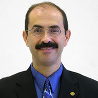
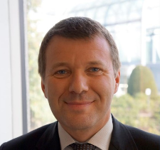
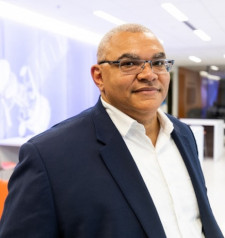
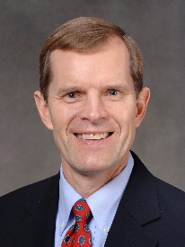

15th ATM Seminar 2023 Bios
Melchor J. Antuñano, FAA

Dr. Antuñano was born in Mexico City and is a graduate of the National Autonomous University of Mexico School of Medicine. He completed the Residency Program in Aerospace Medicine at Wright State University in Dayton, Ohio. He was a post-doctoral research associate with the U.S. National Research Council of the National Academy of Sciences at the USAF School of Aerospace Medicine in San Antonio, Texas. He is the Director of the FAA Civil Aerospace Medical Institute (CAMI) in Oklahoma City. He is credited with 1,005 professional presentations and invited lectures at national and international conferences in aerospace medicine in 42 countries, and with 65 scientific publications covering a variety of aerospace medicine topics. He is Past-President of the International Academy of Aviation and Space Medicine, the U.S. Aerospace Medical Association, the U.S. Space Medicine Association, and the Iberoamerican Association of Aerospace Medicine. He is a Fellow of the Aerospace Medical Association and the Aerospace Human Factors Association. He is a member of the International Academy of Astronautics. He is Honorary Member of the Austrian, Brazilian, Colombian, Greek, Mexican, Peruvian, Slovanian and Turkish Societies of Aviation/Aerospace Medicine. He is a faculty member at the University of Texas Medical Branch in Galveston, and the National University of Colombia School of Medicine. He is a former faculty member at Wright State University School of Medicine. He has received 87 awards and recognitions for his academic, administrative, and research achievements. He has experience as private pilot, parachutist and scuba diver.
Sabrina Saunders-Hodge, FAA

Sabrina Saunders-Hodge is the Director of the Research, Engineering and Analysis Division within the FAA’s UAS Integration Office. She is the FAA’s focal point for Unmanned Aircraft Systems (UAS) and Advanced Air Mobility (AAM) research with responsibility for leading the evolution of the agency’s strategic framework and innovative planning for the applied research portfolio to support the safe and efficient integration of UAS and AAM into the National Airspace System. Ms. Saunders-Hodge collaborates with U.S. federal agencies and international civil aviation authorities (CAA) to lead the establishment of FAA’s UAS/AAM research partnerships.
Prior to joining the UAS Integration Office, Ms. Saunders-Hodge was the manager of the FAA’s NextGen New Entrants Division with program management responsibility for executing UAS research as well as standing up the FAA’s first UAS Center of Excellence.
Over the past thirty plus years Ms. Saunders-Hodge has worked in the fields of unmanned aircraft systems and satellite communications, contributed to the development of ICAO’s global plan for transitioning to future communications, navigation, surveillance and air traffic management (CNS/ATM) systems for civil aviation, co-managed the oversight of FAA/European cooperative research and development initiatives, and worked on the development of operational concepts for technology enhancements within the NAS.
Ms. Saunders-Hodge holds a B.S. and M.S. in Computer Science from The University of Maryland and Johns Hopkins University respectively. Additionally, Ms. Saunders-Hodge is a certified Project Management Professional and a graduate of the Federal Executive Institute.
Chad Bland, Gulfstream

Chad joined Gulfstream in 2017 as a Production Test Pilot and upon selection as the Chief of Safety, implemented Gulfstream’s Aviation Safety Action Program along with renewing the IS-BAO stage 3 certification for Flight Operations. As the Chief of Safety for Flight Operations, he leads the Safety Management System for Flight Test, Airborne Customer Support and Demonstration Team supporting worldwide Gulfstream flight operations.
Prior to Gulfstream, Chad served in the United States Coast Guard for 21 years as a leader, pilot, program manager and aeronautical engineer, retiring at the rank of Commander. While in the U.S. Coast Guard, he completed a wide variety of operational missions in numerous aircraft including search and rescue, law enforcement and Secretary of Homeland Security transport. As an Aeronautical Engineer, he completed test flights on the DA-20, CN-235, CL-604, G-V, G-159 and C-130J while leading maintenance technicians through both daily tasks and Programmed Depot Maintenance.
Chad also holds a FAA certified flight instructor certificate as well as an Airframe and Powerplant mechanic license.
Denis Huet, EUROCONTROL

Denis Huet is the head of the Aviation Intelligence Unit in EUROCONTROL. He is in charge of leveraging the data in EUROCONTROL with the view to inform the aviation community and in particularly its decision makers.
As part of his portfolio, he leads the Performance Review Unit (PRU) in its support to the Performance Review Commission (PRC). He is also in charge of EUROCONTROL traffic forecasts (STATFOR) as well as the Central Office of Delay Analysis (CODA) and Cost Benefit Analysis for SESAR, the R&D part of the Single European Sky.
Denis Huet started as Deputy Head of the Air Navigation Charges Bureau in the French DGCA from 1996 to 2001. He moved to the European Commission in 2001 until 2006 as national expert in the Single Sky Unit, in charge of setting up both the SES charging and performance schemes. He then moved to EUROCONTROL as Head of the Projects Office of the Performance Review Unit until 2013, in charge of supporting the Commission in the development and management of the SES performance scheme. He then spent 3 years as Senior Expert in the Airport Research Unit of Eurocontrol until September 2016, in charge of the development of the performance aspects of the Airport Operations Center (APOC) concept. He became Head of the Economic Performance Review Unit in October 2016, supporting both the Performance Review Commission and the European Commission. Since January 2020, he leads the Aviation Intelligence Unit.
Olivia Nuñez, SESAR JU

Olivia is an Expert at the SESAR JOINT UNDERTAKING. My areas of interest are U-space, Environment (including non-CO2 impacts), Virtual Centre, Increased Flexibility in ATCO Validations (IFAV), Digital Voice Concept of Operations, Wake Energy Retrieval, TBO, Common Altitude Reference System for drones and manned aviation, Geometric Altimetry for manned aviation and RVSM 2.
John-Paul Clarke, University of Texas at Austin

John-Paul Clarke is a professor of Aerospace Engineering and Engineering Mechanics at The University of Texas at Austin, where he holds the Ernest Cockrell Jr. Memorial Chair in Engineering. Prior to joining the faculty at UT Austin, he was a faculty member at Georgia Tech, the Vice President of Strategic Technologies at United Technologies Corporation (now Raytheon), a faculty member at MIT, and a researcher at Boeing and NASA JPL. He has also co-founded multiple companies, most recently Universal Hydrogen – a company dedicated to the development of a comprehensive carbon-free solution for aviation.
Clarke is a leading expert in aircraft trajectory prediction and optimization, especially as it pertains to the development of flight procedures that reduce the environmental impact of aviation, and in the development and use of stochastic models and optimization algorithms to improve the efficiency and robustness of aircraft, airline, airport, and air traffic operations. As indicated in his 2018 testimony to the Science Committee of the U.S. House of Representatives, he is particularly interested in leveraging his expertise to enable increasingly autonomous aircraft-enabled mobility, especially in urban and regional settings.
Chip Meserole, Boeing

Dr. Chip Meserole manages the Airspace Operational Efficiency team in Boeing Research and Technology. The team’s responsibility is to advance new capabilities in air traffic management and flight optimization that enhance system capacity, efficiency, and sustainability globally. Its emphasis is on emissions reduction for aviation sustainability and on integrating autonomous aircraft into the airspace. This group executes the company’s contracts with the FAA, NASA, and SESAR in this domain; creates flight optimization business concepts for Boeing Global Services; and conducts R&D in air-ground integration and network-enabled operations. It has activities in Seattle, Washington, D.C., Spain, Brazil, India, Australia and China. He joined Boeing in 1984 and worked on space system and launch vehicle development before moving into its air traffic management initiative in 2001. He is an associate fellow of the American Institute of Aeronautics and Astronautics. He has a bachelor’s degree from Princeton University, a master’s from Cornell University, and a Ph.D. from MIT, in aerospace and mechanical engineering.
John Hansman, FAA

R. John Hansman is the T. Wilson Professor of Aeronautics & Astronautics MIT, where he is the Director of the MIT International Center for Air Transportation. He conducts research in the application of information technology in operational aerospace systems. Dr. Hansman holds 6 patents and has authored over 250 technical publications. He has over 6000 hours of pilot in-command time in airplanes, helicopters and sailplanes including meteorological, production and engineering flight test experience. Professor Hansman chairs the US Federal Aviation Administration Research Engineering & Development Advisory Committee (REDAC) as well as other national and international advisory committees. He is a member of the US National Academy of Engineering (NAE), is a Fellow of the AIAA and has received numerous awards including the AIAA Dryden Lectureship in Aeronautics Research, the ATCA Kriske Air Traffic Award, Wright Brothers Master Pilot Award, a Laurel from Aviation Week & Space Technology, and the FAA Excellence in Aviation Award.